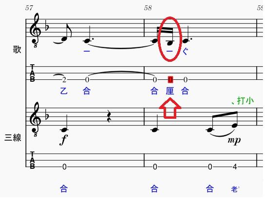
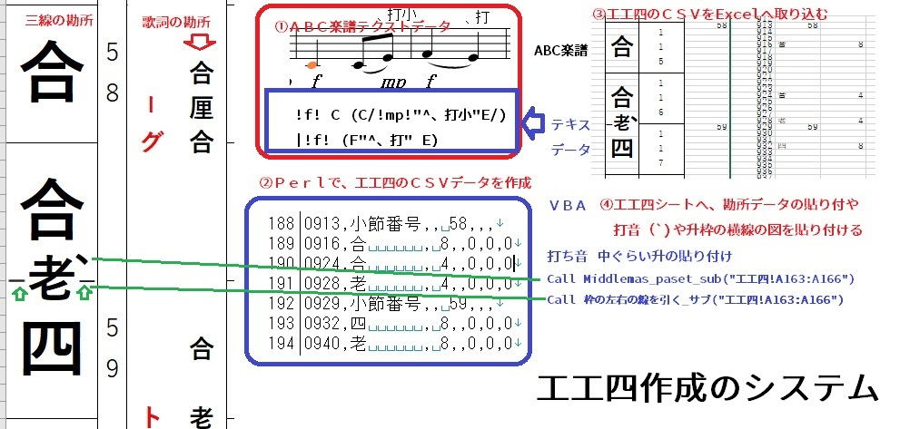

うるがいの話 ある日
最新: 厘（りん）という勘所【うるがいの話 ある日】とは 一日だけのプログです
『うるがいの話』の最新一日だけのプログで、通信料が少なく経済的だ。カニの画像をクリックすると全ての日付が載る『うるがいの話』サイトを表示します
|
|
【うるがいの話】 うるがい(ｳﾙｶﾞｲ urugai)とは、『もずくがに』の名前でとても大きくなります。 |
|---|---|
|
|
【カミマヤーの話】 猫のことを方言でマヤーといいます。カミマヤー（kamimayaa）とは、神の猫のことです。 |
|
【たながぁの音楽】 たながぁ（ﾀﾅｶﾞｰ tanagaa）とは手長えびのことで、何種類かあり大きいのは車 エビぐらいになります。 |

|
【ぶながぁの話】 ぶながぁ(ﾌﾞﾅｶﾞｰ bunagaa)とは、赤い髪の毛、赤い身体、そして身長は１ｍ２０ｃｍ ぐらい、川の蟹を食べているの目撃された。場所は沖縄県国頭郡大宜味村のと ある村僕の隣近所に住んでいる爺さんから、聞いた話です。 |
|
|
【ギーマの話】 ギーマ(giima)とは、山原の里山に咲くスズランに似た、 花を付けます。実は食べられます、 気が付くと口の周りが紫になっています。 |
2024年09月25日 (水）厘（りん）という勘所
16:33
『かぎやで風節』の歌の工工四を作成していたら、楽譜ソフトが、この音
符はおかしいでっせと警告した。ん、確認すると確かに！、三線の調子の
割当より、一度低い。ネットで、探したけど情報はなかった。ま、もろも
ろの工工四では、厘を使っているのでイイカ。

歌詞の工工四は、手作業で行った。二日も費やす、やはりプログラムで行
う必要があると認識を新たにした。意味があるのか？と思うが、マ趣味な
ので、いずれは洋楽の工工四化を実現したいので。

せっかくなので、ユーチューブ動画をば。
『かぎやで風節 三線 琉球箏１４弦 琉球太鼓』３分５７秒
動画演奏
楽譜データもダウンロード出来るのだが、利用しているのでしょうか。い
つかは誰かが、反応してくれるのを楽しみにする。
１６時２３分 ビットコインの総資産 ￥２６、６７０（↑１６９）